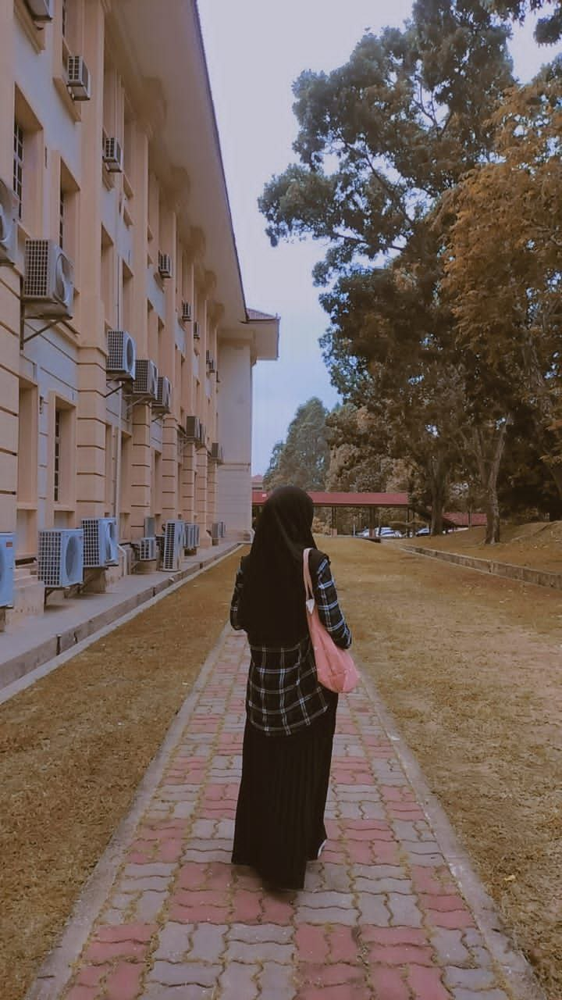

|  | ||
|---|---|---|
| Name | Nur Aleeya Syafiera binti Jasmani | |
| Age | 20 Years Old | |
| Gender | Female | |
| Date of Birth | 3 November 2003 | |
| Religious | Islamic | |
| Nationality | Malaysia | |
| State | Perak | City | Teluk Intan |
| Number of family members | 5 members of family | |
😉Generally, I was born in teluk intan hospital, perak. In addition, I also have siblings,
my brother who is 24 years old and still single 😜hehe, me as my older sister and
younger sister, in short we grew up with 😍love even though we all have to feel
all the pain to reach happiness now😊.
Moreover, a little about myself, 😚my personality is that I am an ambivert who is
able to balance my way with two different atmospheres. 😊It's just
that sometimes I like to choose to be silent if there is nothing to
talk about. And that choice because there is a past story that
made me choose to be silent🙃, and this is the best path
for me and I like it🥰.
In short, 😚I am a very spoiled person in the family hehe and I am also a person who
does not give up easily😏. As long as Allah SWT gives me that opportunity,
I will take that opportunity without hesitation🥰.
🌼Introducing Myself🌼
“Throughout my life until I was 20 years old, I have felt the fall and rise in terms of my family, my studies and myself, and I believe that all obstacles are to make us stronger to overcome the problems that will befall us, also I believe that every test from Allah is a sign that Allah SWT still watches and loves us so be thankful🌼”